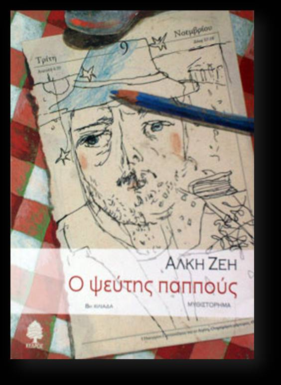

«Να δούμε τι δικαιολογία θα βρει πάλι συλλογίστηκε ο Αντώνης. Πως ήταν μεγάλος ψεύτης ο παππούς, το ήξερε. Σαν τον βαρόνο Μινχάουζεν. Ο Μινχάουζεν είχε γίνει διάσημος σ’ όλο τον κόσμο για τις ψευτιές του. Ο παππούς όμως ούτε βαρόνος ήταν, ούτε θα γινόταν γνωστός στα πέρατα της γης για τα ψέματά του. Το περίεργο βέβαια ήταν πως οι ιστορίες που σκαρφιζόταν έβγαιναν πολλές φορές αληθινές». Ο δεκάχρονος Αντώνης και ο παππούς του ο Μάριος περνούν όλα σχεδόν τα απογεύματα μαζί. Ο παππούς, συνταξιούχος ηθοποιός, του διηγείται πολλές και απίθανες ιστορίες από όλα όσα έχει ζήσει. Ο Αντώνης όμως δεν τον πιστεύει, γιατί τις περισσότερες φορές οι ιστορίες που του αφηγείται ο «ψεύτης παππούς» τού φαίνονται υπερβολικές και απίστευτες. Για τη γιαγιά όμως ο παππούς δε λέει κουβέντα. Ένα οικογενειακό μυστικό θα έρθει σιγά σιγά στο φως κι έτσι ο Αντώνης θα ωριμάσει και θα καταλάβει τελικά την αλήθεια του «ψεύτη παππού»
|  |
Βρείτε περισσότερες πληροφορίες σχετικά με το βιβλίο: Ο Ψεύτης Παππούς.